5. Mod Cleaning and Error Checking
5.1 Preface
The principal reason for the presence of dirty mods is a lack of awareness of the issues surrounding dirty mods and the importance of mod cleaning. As such, a community-wide effort is required to raise awareness and so reduce the incidence of dirty mods.
It's NOT a good idea for everyone to just go ahead and clean their full load order and then forget about it.
The problem is twofold. First, to properly clean mods usually requires an understanding of the intent of the mod author. There might be implicit dependencies on other mods which are not part of the master list. Second, and following from the first, depending on how the cleaning was done, people end up with slightly different versions of these modules, which is going to make support in case of problems a nightmare for the mod author.
Mod quality is a community-wide problem that needs to be properly addressed on a community level. Mod authors need to ensure that their mods are clean, because they only need to clean their mod once for all future users to benefit, whereas each and every user of a dirty mod would have to clean it themselves, which is hugely inefficient.
The LOOT team provides a focus for community efforts to raise awareness regarding mod cleaning, by accepting reports of dirty mods and attaching them to the relevant plugins in the LOOT masterlist as messages containing a link to this wiki page, along with any additional information supplied. This data is then extracted and displayed to the user by LOOT when it runs, and the data can also be accessed by other utilities that make use of the LOOT API. The result is a central repository of information that can be accessed by a large number of people.
For mod authors:
- Clean your mods properly. All of them. You are the one who really knows the intention of your mod. Closely review all changes to make sure they preserve the intent of your mod.
- Cleaning mods is NOT just limited to running the automated functions and be done with it. Manually review every override record your module(s) contain to make sure that that's really what you intended to do.
- List in your documentation that you HAVE cleaned your mods and which version of TES5Edit you used for it. If there were any implicit dependencies that you had to observe while doing the cleaning, specifically list them and the rational for them.
For mod users:
- Check any mods you use that do not specifically mention being properly cleaned (by basically doing a dry run of the cleaning process).
- If any of your mods are dirty, inform the author. The mod authors are the ones that really understand the intention of their mods. They are the ones that are in the best position to properly clean them. And if they only publish properly cleaned mods, the whole community benefits from it.
- If a mod has been deserted by its author or the author is unwilling to fix his mess, just leave a short note on the comments and/or in the RELz thread to save other mod users from wasting their time. Remember: stay civil; flaming doesn't help anyone.
- If any of your mods are dirty, submit them to the LOOT team as directed in the LOOT readme, so that others can benefit from your findings.
5.2 Overview
xEdit provides several tools that help mod authors to clean their mods of extraneous / duplicated references, fix deleted references and to merge plugins together. These utilities can help a mod author avoid many conflicts with other mods and is considered a best practice. It is highly recommended that mod authors clean their mods before they are released to the general public, which can avert silly and embarrassing compatibility problems after release and make for a more professional showing in the community.
Mod quality is a community wide problem and needs to be addressed on that level. If everyone just tweaks their load order around and cleans mods they installed that's not going to move us forward as a community. It is important that if there are general issues with a mod that these be made public and the author of the mod fixes them. With many of the possibly conflicting changes that a mod makes, it becomes a question of intent when cleaning them up, and only the mod author can give an authoritative answer to that.
This chapter is really dedicated to mod authors, and can be safely ignored by mod-users (whew!). Mod Authors that use the GECK should realize that the GECK can set the modified flag on a thing very easily, and that gets saved into your mod as an override to some standard object. The problem comes when players integrate your mod with others that make intentional changes to the standard object that you inadvertently saved – which is the cause of more conflicts than any other kind between mods today.
Note: Those not convinced by now to read-through and understand the mod cleaning and merging process are sloppy and should be sacked. For the honorable modders who want to contribute to the community in the right way, read-on.
5.3 Mod Cleaning Process
Short video about the cleaning process and why no steps exist and why no guides are needed.
With the release of 4.0.x users should only clean mods using Quick Auto Clean. An additional option is provided so users can review the cleaning more closely known as Quick Clean. Both methods are described below.
NOTE: There is no manual cleaning and any guides suggesting a manual process are outdated. Please ask the author of the guide show the Qucik Auto Clean Process instead.
5.3.1 Why must I clean one file at a time?
The records you are trying to clean are the records that override changes to vanilla values. It has always been explained that you can't load additional modules. It can turn "identical to master" into "identical to master, but conflict winner" which the later will not be cleaned from the module. When those are EXACTLY the records you want to clean. So cleaning while having additional modules loaded makes the complete process utterly pointless and a waste of time.
Cleaning with all your mods loaded would be like looking for someone through a crowd of people. You can't see through the crowd and with all the mods loaded xEdit can't see only the masters of the plugin. This prevents it from calculating ITMs accurately.
While Quick Auto Clean may be new nothing has changed. You would not have been able to clean with multiple mods loaded even with previous versions. People may have claimed to have done this in the past however, they were not cleaning their mods properly.
5.3.2 Different ways to activate Quick Auto Clean.
There are two ways to activate Quick Auto Clean. You can rename the EXE file or you can add a command line parameter to a shortcut.
The easiest way is to use the EXE file provided in the download from the Nexus. It is already renamed properly to be used to clean your mods as shown below. For more information see section 2.2.1 Downloading xEdit from the Nexus
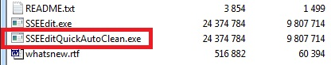
5.3.2.1 Cleaning renaming the EXE
You can add "QAC" or "QuickAutoClean" to the filename and create a shortcut to use the Quick Clean procedure. For Skyrim SE you would name it "SSEEditQAC.exe" or "SSEEditQuickAutoClean.exe" as shown below.
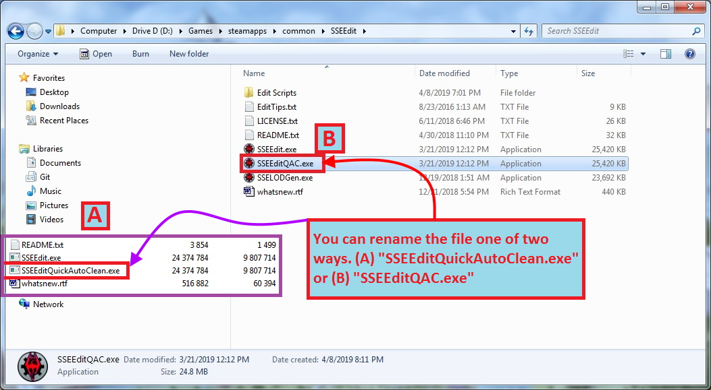
5.3.2.2 Cleaning using a shortcut
When creating a shortcut go to the folder where you installed xEdit. Right click the file name and choose "Send To" and then "Desktop (create a shortcut)" to create a shortcut.
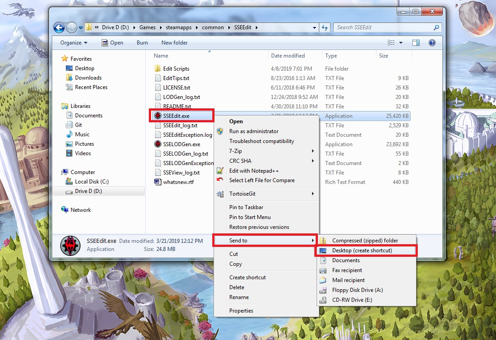
The parameter will go in the "Target" box.

Quick video on how to add the parameter.
5.3.2.3 Adding a Comand Line Parameter in MO2
For MO2 you would add the parameter to the Arguments.
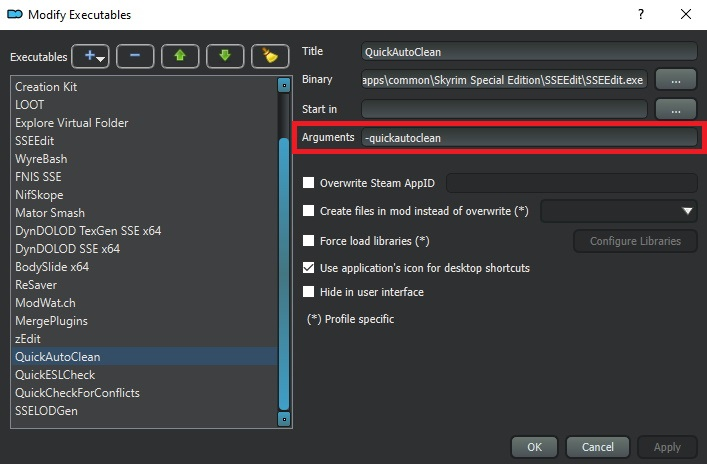
For more information you can refer to the STEP Guide:XEdit
5.3.2.4 Adding a Comand Line Parameter in Vortex
For Vortex you would add the parameter to the Command Line box.
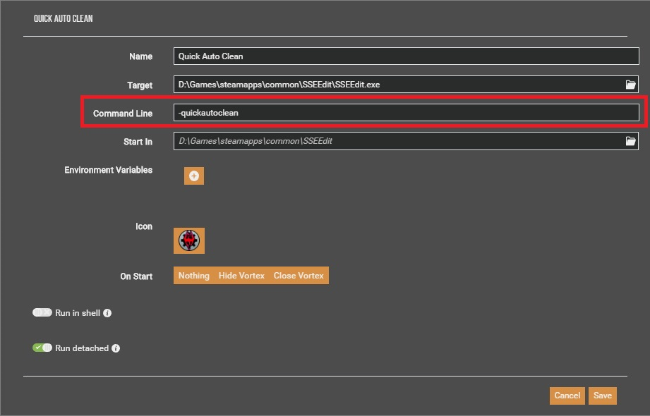
For more information you can refer to the Nexus Wiki Tool Setup: xEdit
5.3.3 Selecting a plugin to clean
When selecting a plugin to clean you can check or double click one, and only one, plugin to clean.
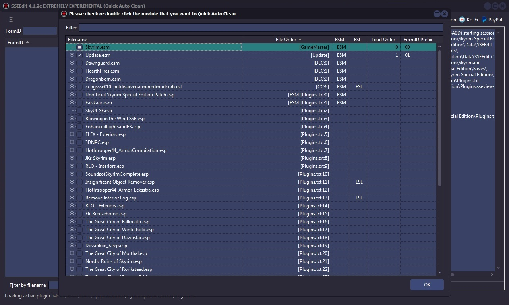
5.3.4 Quick Clean VS. Quick Auto Clean
The main difference between Quick Clean and Quick Auto Clean is that Quick Clean prompts you to save the file when closing xEdit after the cleaning process finishes.
Both Quick Clean and Quick Auto Clean run through the cleaning process more than once. Running the process additional times corrects inconsistancies not corrected by completing the process only once. Some DLC requires additional corrections that can only be completed after the process has run at least one time.
The only disadvantage is that when using Quick Clean you may have use the procedure more then once on some DLC. With Quick Auto Clean this is not needed.
5.3.4.1 Quick Clean Method
This method is for those who want to be more involved in the process.
This procedure cleans 2 times. Some DLC requires that they are cleaned twice because after saving the cleaned mod's records are updated. The quick clean procedure does not save in between each step. When you close xEdit you will have the option to save the file with the changes or cancel. You will have to repeat this step for any DLC that requires multiple cleanings.
To enable this procedure, you would create a shortcut on your desktop and add the -quickclean parameter.
5.3.4.2 Quick Auto Clean Method (Recommended)
This is the preferred and recommended method. You will have to close xEdit once the process terminates but everything is automatic.
This procedure cleans 3 times and saves in between each step. Some DLC requires that they are cleaned twice because after saving the cleaned mod's records are updated. Because the quick auto clean procedure saves between each step, you no longer need to clean DLC multiple times with the feature. However, this process is automatic and you will not be able to stop it. You will only be able to review the changes once the process is completed.
To enable this procedure, you would create a shortcut on your desktop and add the -quickautoclean parameter.
For quick auto clean you will not be given an option to save. When finished you can review the changes, copy the LOOT info, and see any errors that occurred. For quick clean you will be presented with an option to save the plugin or cancel.
5.3.5 Sorting Master File Load Orders
There are times in which the load order of Master files gets switched around when you add/change load orders. The, "Sort Masters" function corrects the master file load order in the Plugins MASTer list, and correctly renumbers all file specific FormIDs.

There is no specific log-output from the function unless there is a problem. If you see "Done sorting masters" and no issues or errors in the Messages Tab, then the function sorted the masters correctly.
When should you use Sort Masters?
According to Elminster: If a plugin has two masters that are siblings (one doesn't have the other as a master, so they can load in either order) and they are overriding the same record from an earlier master (e.g. both are overriding a record from the main game master file), then loading them in a different order will result in a different version of the overridden record being the "winner". But the plugin might depend on the winner being the one indicated by the order in which it references the masters.
5.3.6 Using Clean Masters to purge un-used Master File References
Master File References are links or references from your Plugin to any Master files (ESMs) that it depends on to run, and stores the list in a record called, "MAST". Most Plugins have the game's ESM file in their master list, but you can have many such links in a plugin. For example for Fallout3 each file will start with Fallout3.esm. If when you create a Merged Patch with xEdit, it puts links to many or nearly-all of the master files in your mod list. It is possible in some cases for a Plugin to contain a link to a master file that it does not need.
For example, suppose the Plugin we are cleaning had MasterB.esm in its MASTer list but it doesn't contain any overrides for, or makes any other references to, records from MasterB.esm. In that case we would not need nor want MasterB.esm listed in the MASTer record for our Plugin! This function detects any un-used MASTer references in the Plugin we are cleaning, and removes them from the MASTer list. xEdit also renumbers any file specific FormIDs in the Plugin to ensure that it is cleaned properly.
The screenshot below illustrates how to activate the, "Clean Masters" function:

Unfortunately there is no log-file output for this function. If you see "Done cleaning masters" and no issues or errors in the Messages Tab, then the function cleaned the masters correctly.
The screenshot below illustrates how the BetterCaravans mod looks now that it's clean, with it's new sparkly (bold)-Green text in the Navigation Treeview (A):

At this point you should save your mod and load it up in-game to make sure that everything is still happy.
Note: You should not remove masters from other people's mods! You will drastically effect the mod and it will no longer perform the changes the author intended. It is the responsibility of each mod author to remove unused masters. You can request that the mod author provide another version. Please be respectful if they refuse to remove masters as some mod authors intentionally override specific records in order for the mod to effect the game the way they intended.
5.3.7 Listing Master File References from a specific plugin
When using Clean Masters if references are still in use the Master will not be removed from the master list. In order to
list references we will be using a script named List records referencing specific plugin.pas. This may take a
while depending on how many references there are in the Plugin.

For the above example I chose to list the references used by 04 for PointLookout.esm.
A notification will appear in the messages tab when the operation is complete. All of the records referencing the plugin will be listed. You will need to properly deal with all the references before xEdit will remove the master. This could mean changing a reference to reference another master or removing the reference entirely.
Note: You should not remove masters from other people's mods! You will drastically effect the mod and it will no longer perform the changes the author intended. It is the responsibility of each mod author to remove unused masters. You can request that the mod author provide another version. Please be respectful if they refuse to remove masters as some mod authors intentionally override specific records in order for the mod to effect the game the way they intended.
5.4 Checking For Reference Errors
The "Check for Reference Errors" function reports any case in which the information contained in a module file does not match the xEdit record definitions. There is a very minimal chance that something that's reported as an error is actually an oversight in the xEdit record definitions and not in the module, but all cases should be reported to be safe. Note that there are errors in the Fallout3.esm and the DLCs. Both Elminster and Quarn have gone through them all to ensure they are genuine errors. Running the check is a recommended practice as part of the mod-cleaning process as shown below:
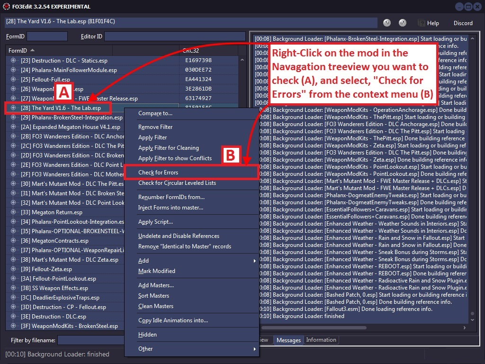
When the error-check is complete, the screenshot below shows you how the output will look when errors are found in a module:
PACK \ Locations \ PLDT - Location 1 \ Location -> Found a NULL reference, expected: ACHR,ACRE,PBEA,PGRE,PLYR,PMIS,REFR
In this example a reference was found but xEdit expected a different type of reference. These kinds of errors are not serious and should be sent to Elminster to ensure xEdit has the right information.
TES4 \ ONAM - Overriden Forms \ Form #0 -> [1300DBC4] < Error: Could not be resolved >
In this example we found Unresolved Reference errors (Ouch!) These errors are very serious as they indicate a record from the mod is trying to reference something, but what it is looking for is missing from the mod or the master of the mod. Mod authors should never leave these uncorrected! They should be corrected by the mod author and not by you!.
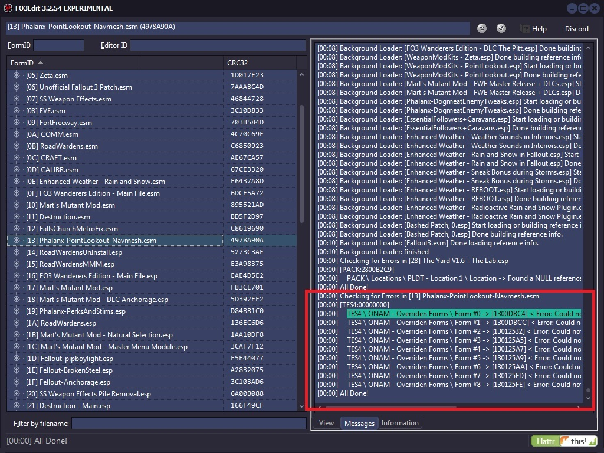
If other errors were found such as data that is missing, Flags or Idle Timer Settings, then those errors should be corrected by the mod author and not by you!.
5.5 Checking for Circular Leveled Lists
With mods it is possible to have Leveled Lists that reference other Leveled Lists that are perfectly valid. However, it's possible in some cases that a mod builds a circular reference (with as little as 2 leveled lists directly referencing each other, or any number of additional leveled lists in the chain). When the game engine then tries to resolve that leveled lists down to a particular item/creature/NPC, it can get caught in the endless loop and crash. This function looks for such cases and identifies them if they exist:
I have not yet found an example in any mod of such a circular leveled list, but I do know that they exist and that xEdit can spot them. If you don't get any output from running this function, then the checked mod is clean of such loops.
Appendix A
Types of Dirty Edits:
Identical To Master
Identical to Master (ITM) edits are the most common type of dirty edit. They're where a mod has overwritten something in the game without actually changing anything. If another mod higher up in the load order makes an intentional change to that thing, it will have its effect cancelled out by the ITM record, which can cause problems. ITM edits can be cleaned automatically using xEdit.
- Example 1: Identical To Master Edits
- Consider a quest mod in which the author has also changed the properties of some sneaking settings to better fit with other areas of the quest mod. The author then later decides the sneaking changes are unnecessary, and sets them back to their original values. If this quest mod were then loaded after a mod that overhauls the sneaking system, the sneaking overhaul's effects would be at least partially undone by the quest mod, which is not the effect intended by the author of either mod, nor the effect desired by the user.
- The solution would be to clean the quest mod, which would remove the ITM edits and allow the sneaking overhaul mod to function as intended.
Deleted Reference
Deleted references are a significant cause of crashes and game bugs. This is because if one mod tries to modify a reference that another mod has deleted, then the first mod cannot find the reference, and this then causes problems. A deleted reference can be fixed by undeleting then disabling the references and moving it to a position where it is no longer visible in the Creation Kit (xEdit sets the Z axis position to -30,000 units). This has the same effect as deleting the reference, without causing issues. Deleted references can be cleaned automatically using xEdit.
Deleted Navmeshes
Like deleting records, deleting navmeshes can cause crashes. However, these cannot be automatically corrected, and require manual cleaning.
Wild Edits
Wild edits are unintentional or misdirected edits to game elements by a mod author that cause unnecessary conflicts with other mods. They are called wild edits because they often appear to have been made haphazardly with no relation to the author's stated intentions. Because detecting wild edits involves knowing what the mod is supposed to do, they must be cleaned manually.
One example of a wild edit would be when a container is incorrectly modified to include an item, but instead of only that one container including the item, the result is that all containers of the same type include the item. If the description of the mod states that an item is added to a specific container, then it is clear this is a wild edit and the mod should be cleaned by fixing the wild edit.
Appendix B
Should Anyone Manually Clean Dawnguard?
I have never made thses changes. Personally I don't see the point of removing two test cells and making a change already included in the Unofficial patch. However there are other community members that feel there is some benifit in doing this.
There is no set opinion from the xEdit team. A user reported a CTD recently and upon investigation a mod author made these changes but instead using xEdit and doing it properly, it was deleted with the CK. This caused the game to crash if anything alterd the same portions of Dawnguard related to these changes. The very reason removing UDRs is important.
Manually Cleaning Dawnguard.
While I still feel this is not necessary here are the steps. The images used are from alt3rn1ty's guide on AFK Mods. The steps are shown here because there is no longer a manual cleaning process, and you never needed to apply any filters to perform these steps in the first place.
Step 1: Remove XEZN subrecord from RiftenRatwayZone.
• In the upper left corner enter 00016BCF into the FormID field in xEdit. After you enter 00016BCF press [ENTER] to jump to that cell.
• Scroll to the right and scroll down until you see the XEZN field. Right click the indicated sub-record, and choose Remove.
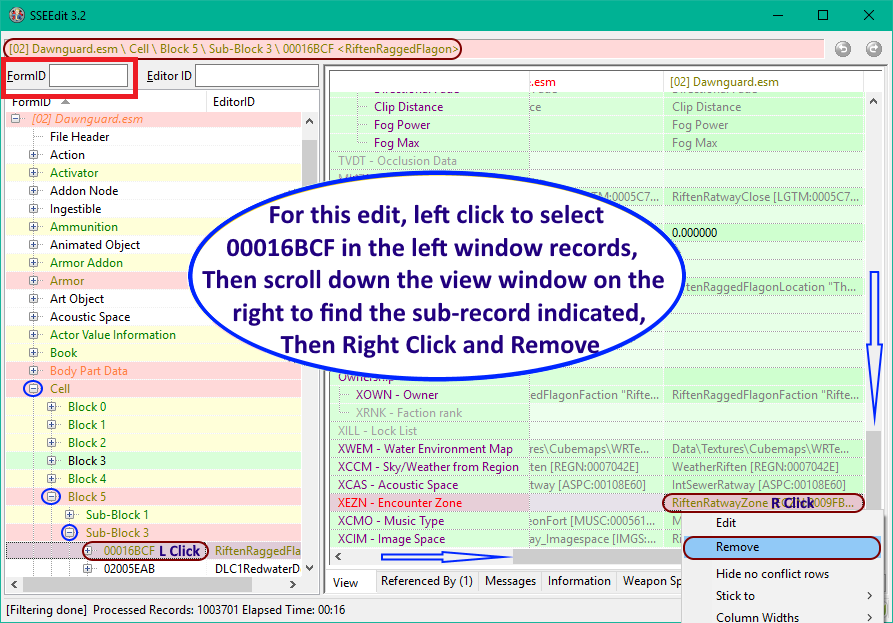
Step 2: Remove CELL 0001FA4C.
• Expand the records as in the following screenshot, and right click the indicated record, and choose Remove
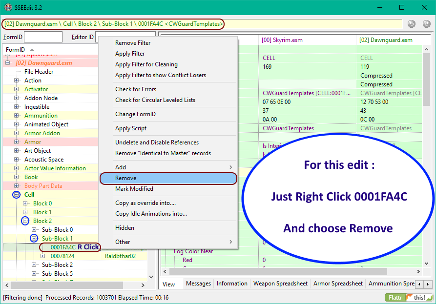
Step 3: Remove CELL 0006C3B6.
• Expand the records as in the following screenshot, and right click the indicated record, and choose Remove
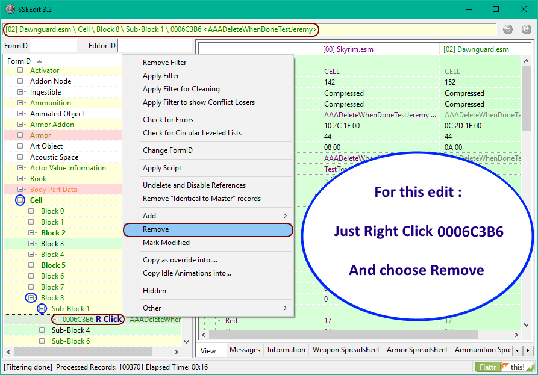
Glossary
This glossary contains definitions for the general modding terms and cleaning-specific terms used in this guide.
Mod: A modification for Skyrim. Can be player-made or official DLC.
Plugin: A file with a .esp or .esm file extension (well, it's what's inside the file that matters, but the file extension is a pretty good clue).
Record: A data structure inside a plugin that holds the information on one element of the game. For example, each type of weapon, each race, each potion, etc. have different records.
Rule of One: Only one plugin's changes to a record can be applied by the game. If multiple plugins change the same record, then the changes from the last of those plugins in the load order will be applied. There are a few exemptions, eg. if multiple plugins put things into the same cell, then all those things will be seen in-game, but in general the rule holds for non-complex record types (and complex record types are beyond the scope of this guide).
Load order: The order in which plugins are loaded.
Dirty mod: A mod that contains dirty edits, wild edits, deleted references or any combination of them.
Dirty edit: An edit made which is unnecessary, often caused by Creation Kit bugs or authors making unintended edits then undoing them incorrectly. Such edits can be cleaned automatically.
Identical To Master edit: A type of dirty edit made where the edited value(s) is/are identical to the value(s) without the edit.
Wild edit: An edit made which is not consistent with the intent of the mod, often caused by authors accidentally making small edits or trying to perform an edit in the wrong way. Such edits must be cleaned manually.
Deleted reference: A reference to a record that has been deleted. For example, placing a Silver Sword into the game world creates a Silver Sword reference there, which may then be removed by deleting it.
Dependency: A plugin upon which another plugin relies. For example, Skyrim.esm is a dependency for most mods.
Explicit dependency: A dependency that is recorded within the dependent plugin, such that the game cannot be loaded without the dependency being satisfied.
Implicit dependency: A dependency for which there is no indication given within the dependent plugin, and which can only be determined by considering author intent.